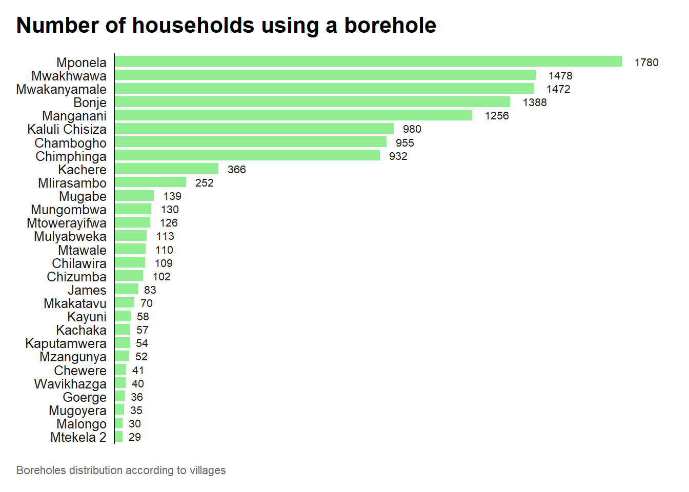

The goal of boreholefuncmwi is to provide access to data which were collected in the Karonga district (North of Malawi) and contains answers from a 20-minute questionnaire about boreholes. The questionnaire was installed on koboTooolbox (www.kobotoolbox.org) to collect borehole functionality data from 300 respondents aged 18 and above.
Installation
You can install the development version of boreholefuncmwi from GitHub with:
# install.packages("devtools")
devtools::install_github("openwashdata/boreholefuncmwi")
## Run the following code in console if you don't have the packages
## install.packages(c("dplyr", "knitr", "readr", "stringr", "gt", "kableExtra"))
library(dplyr)
library(knitr)
library(readr)
library(stringr)
library(gt)
library(kableExtra)Alternatively, you can download the individual datasets as a CSV or XLSX file from the table below.
| dataset | CSV | XLSX |
|---|---|---|
| boreholefuncmwi | Download CSV | Download XLSX |
Data
boreholefuncmwi
The dataset boreholefuncmwi contains data about borehole’s management in the North of Malawi. Questions included in the questionnaire are for example about the borehole maintenance contributions from the community, the availability of borehole spare parts, tariff collection frequency and presence of a service provider. It has 108 observations and 17 variables.
boreholefuncmwi |>
head(3) |>
gt::gt() |>
gt::as_raw_html()| id | date | role | committee_members | last_meeting_participants | annual_budget | village | number_households | tariff_costs_consider | tariff_frequency | tariff_amount | total_money | tariff_hh_number | distance_materials | service_provider | preventive_maintenance | functional_status |
|---|---|---|---|---|---|---|---|---|---|---|---|---|---|---|---|---|
For an overview of the variable names, see the following table.
| variable_name | variable_type | description |
|---|---|---|
| id | integer | Identification number of the observation |
| date | date | Date the survey was filled out |
| role | character | Main role of the respondent including Area Mechanic, Chief/Village Headman, Community member, Councilor, Head teacher/Teacher, HSA/Health officer, Hand pump borehole committee chair, Hand pump borehole committee member, Hand pump borehole owner, Water Seller, and Water User Association/Water Board member |
| committee_members | integer | How many people are on the Hand pump borehole Committee? |
| last_meeting_participants | integer | How many community members attended the last meeting? (Label 99 for unknown) |
| annual_budget | integer | How much money do you need to manage this borehole without financial problems annually? |
| village | categorical | Name of the village |
| number_households | integer | How many households use this hand pump borehole? |
| tariff_costs_consider | categorical | What costs were considered when setting the tariff or user fee? |
| tariff_frequency | categorical | How often is the tariff/user fee collected? Including per month, per 2 months, per quarter, per year and when required for repairs. |
| tariff_amount | integer | How much is the tariff/user fee in Kwacha? |
| total_money | integer | How much do you source to support operations and maintenance annually? |
| tariff_hh_number | integer | How many households in the community paid a water fee the last time it was collected? |
| distance_materials | categorical | How far away are/were the materials you use for hand pump borehole repairs? Options including >20km, 0-20km, within community, and don’t know. |
| service_provider | categorical | Is there a service provider or someone responsible for operating and/or maintaining this hand pump borehole or water system? Yes for 1 and No for 0. |
| preventive_maintenance | categorical | Do you conduct preventive maintenance? |
| functional_status | categorical | Functional status of the borehole |
Example
It can be interesting to analyse the numbers of households who draw water from a borehole in each village. Here is a plot showing the distribution of boreholes’ use across villages.
library(boreholefuncmwi)
library(unhcrthemes)
library(ggplot2)
borehole_user <- boreholefuncmwi %>%
group_by(village) %>%
summarise(number_households = sum(number_households, na.rm = TRUE))
ggplot(borehole_user) +
geom_col(aes(
x = number_households,
y = reorder(village, number_households)
),
fill = "lightgreen", # Change the color here to light green
width = 0.8
) +
geom_text(aes(
x = number_households,
y = reorder(village, number_households),
label = round(number_households)
),
hjust = -0.5,
size = 8 / .pt
) +
labs(
title = "Number of households using a borehole",
caption = "Boreholes distribution according to villages"
) +
scale_x_continuous(expand = expansion(c(0, 0.1))) +
theme_unhcr(
grid = FALSE,
axis = "y",
axis_title = FALSE,
axis_text = "y"
)
# Provide some example code hereCapstone Project
This dataset is shared as part of a capstone project in Data Science for openwashdata. For more information about the project and to explore further insights, please visit the project page at
License
Data are available as CC-BY.
Citation
Please cite this package using:
citation("boreholefuncmwi")
#> To cite package 'boreholefuncmwi' in publications use:
#>
#> Preisig J, Yesaya M, Zhong M (2024). _boreholefuncmwi: Analysis of
#> boreholes' functionality in Northern Malawi_. R package version
#> 0.0.0.9000, <https://github.com/openwashdata/boreholefuncmwi>.
#>
#> A BibTeX entry for LaTeX users is
#>
#> @Manual{,
#> title = {boreholefuncmwi: Analysis of boreholes' functionality in Northern Malawi},
#> author = {Juliette Preisig and Mabvuto Yesaya and Mian Zhong},
#> year = {2024},
#> note = {R package version 0.0.0.9000},
#> url = {https://github.com/openwashdata/boreholefuncmwi},
#> }